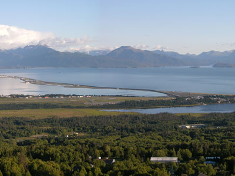
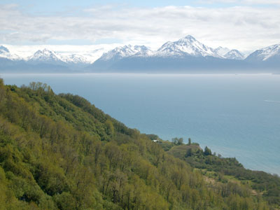
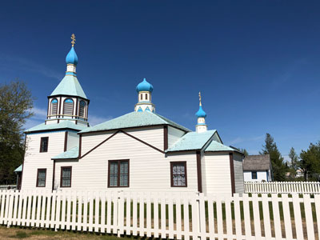
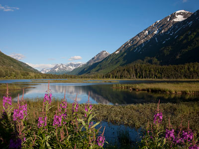
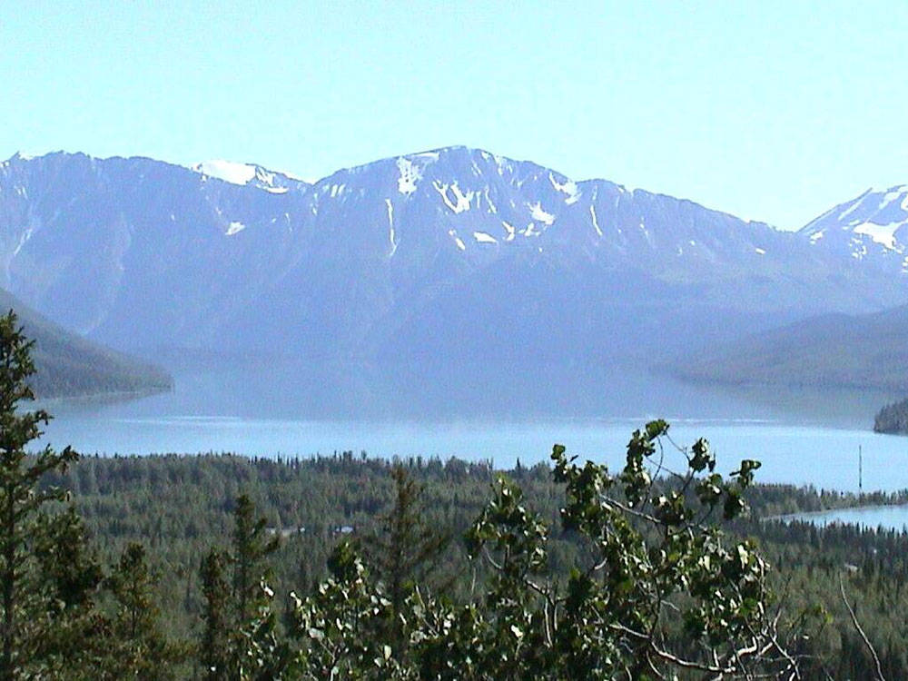
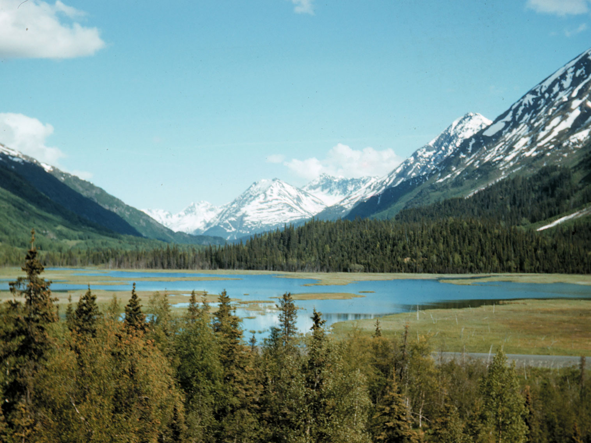

Kenai Peninsula Travel Guide
Large peninsula jutting from the coast of Southcentral Alaska
Places to See in Kenai Peninsula
Grinnell Point and Swiftcurrent Lake from the Many Glacier Hotel
Jeff P from Berkeley, CA, USA, CC BY 2.0, via Wikimedia Commons; Image Size Adjusted
.jpg){kind=link}
Alaska Wildlife Conservation Center
Wildlife conservation facility featuring native Alaskan mammals and birds, educational exhibits, natural habitats, and opportunities to observe rescued animals while supporting conservation and rehabilitation efforts.

Photo (c)2005 Derek Ramsey (Ram-Man), CC BY-SA 2.5, via Wikimedia Commons; Image Size Adjusted

Homer
Coastal fishing town offering scenic ocean views, access to wilderness adventures, vibrant arts culture, and opportunities for wildlife viewing and outdoor recreation.

Brian from California Desert, United States, CC BY 2.0, via Wikimedia Commons; Image Size Adjusted
.jpg){kind=link}
Kachemak Bay
Stunning coastal bay featuring mountains, glaciers, marine wildlife, and protected waters ideal for kayaking, boating, and scenic exploration.

Nikamartinez, CC BY-SA 4.0, via Wikimedia Commons; Image Size Adjusted

Kenai
Vast coastal wilderness of glaciers, fjords, and icefields where rugged mountains meet the ocean and abundant marine wildlife thrives.

Sujohn Das from Seattle, USA, CC BY-SA 2.0, via Wikimedia Commons; Image Size Adjusted
Kenai Fjords National Park
Vast coastal wilderness of glaciers, fjords, and icefields where rugged mountains meet the ocean and abundant marine wildlife thrives.

Eli Duke, CC BY-SA 2.0, via Wikimedia Commons; Image Size Adjusted

Portage Glacier
Glacier destination featuring ice-covered mountains, scenic lake cruises, dramatic alpine landscapes, visitor exhibits, and opportunities to experience one of Alaska's most accessible glacial environments.

1brownsfan, Public domain, via Wikimedia Commons; Image Size Adjusted

Seward
A small coastal port community surrounded by mountains and ocean waters that serves as a gateway to glaciers, marine wildlife, and outdoor recreation.

Carol M. Highsmith, Public domain, via Wikimedia Commons; Image Size Adjusted
Seward Highway
A nationally recognized scenic roadway stretching through mountains, forests, and coastal inlets with sweeping views of glaciers, wildlife, and dramatic alpine landscapes.
Overview
The Kenai Peninsula is a big peninsula in Southcentral Alaska, about a 2.5-hour drive south of Anchorage, known as “Alaska’s Playground” for its fishing, glaciers, mountains, and wildlife. Visitors come to see Kenai Fjords National Park, catch salmon and halibut, and explore the artsy town of Homer on Kachemak Bay.
The peninsula is easy to reach and packed with variety: boat tours of tidewater glaciers, hiking to Exit Glacier, rafting and fishing on the Kenai River, kayaking, bear viewing, and scenic driving on the Seward Highway.
Geography
The peninsula is about 150 miles long, bordered by Cook Inlet on the west and Prince William Sound and the Gulf of Alaska on the east and south. The Kenai Mountains rise along the east side, topped by the Harding Icefield, which feeds more than 30 glaciers, while the western lowlands have forests, wetlands, and lakes. Fjords carved by glaciers cut into the coast, and the climate is milder and drier on the west side than on the wet southeast coast.
History
The peninsula is named for the Kenaitze (Dena’ina) people, who have lived on the west side for thousands of years, and the Alutiiq (Sugpiaq) people lived along the coast. Russian fur traders built Fort St. Nicholas (Redoubt) near the Kenai River in 1791. Gold was found at Hope and Sunrise in the 1890s, and Seward was founded in 1903 as the ocean terminus of a railroad, now the Alaska Railroad. The 1964 Good Friday earthquake devastated Seward and other communities, and oil was found on the Kenai in 1957.
Cities and Towns
Seward is the gateway to Kenai Fjords and sits on Resurrection Bay. Homer is known for the Homer Spit, galleries, and halibut fishing, and Kenai and Soldotna are the centers of the Kenai River salmon fishery. Smaller communities include Cooper Landing, Hope, Ninilchik, and Sterling.
National Protected Areas
Kenai Fjords National Park protects the Harding Icefield, Exit Glacier, and a coast of fjords full of whales, sea otters, puffins, and tidewater glaciers. The Kenai National Wildlife Refuge covers about two million acres of forest, lakes, and mountains, with the Swan Lake and Swanson River canoe routes and the Skilak Lake area. The Alaska Maritime National Wildlife Refuge has its visitor center in Homer, and the Iditarod National Historic Trail starts in Seward.
State Parks and Historic Sites
Kachemak Bay State Park, Alaska’s first state park, is accessed by water taxi from Homer and has glaciers, hiking, and kayaking. Kachemak Bay State Wilderness Park adds more wild country, and Captain Cook State Recreation Area near Nikiski has beaches and trails on Cook Inlet. Deep Creek and Ninilchik state recreation areas offer fishing and camping, and the Russian Orthodox chapel at Ninilchik is a historic landmark.
Seasons and Best Time to Visit
Summer, from May through September, is the busiest season, with long days, fishing, wildlife cruises, and the best hiking. King salmon run in late May through July, sockeye run in July, and silver salmon run in August and September. Fall brings fewer crowds and golden colors, and winter offers cross-country skiing, snowmachining, and northern lights, though some roads and tours close. Seward hosts the Mount Marathon race on July 4.
This article uses material from the Wikipedia articles and official tourism pages for Travel Alaska - Kachemak Bay State Park & State Wilderness Park, Kenai Peninsula, released under the Creative Commons Attribution-Share-Alike License 3.0. Additional information is from the National Park Service page for Kenai Fjords National Park, the U.S. Fish and Wildlife Service Kenai National Wildlife Refuge page, and Alaska State Parks.


